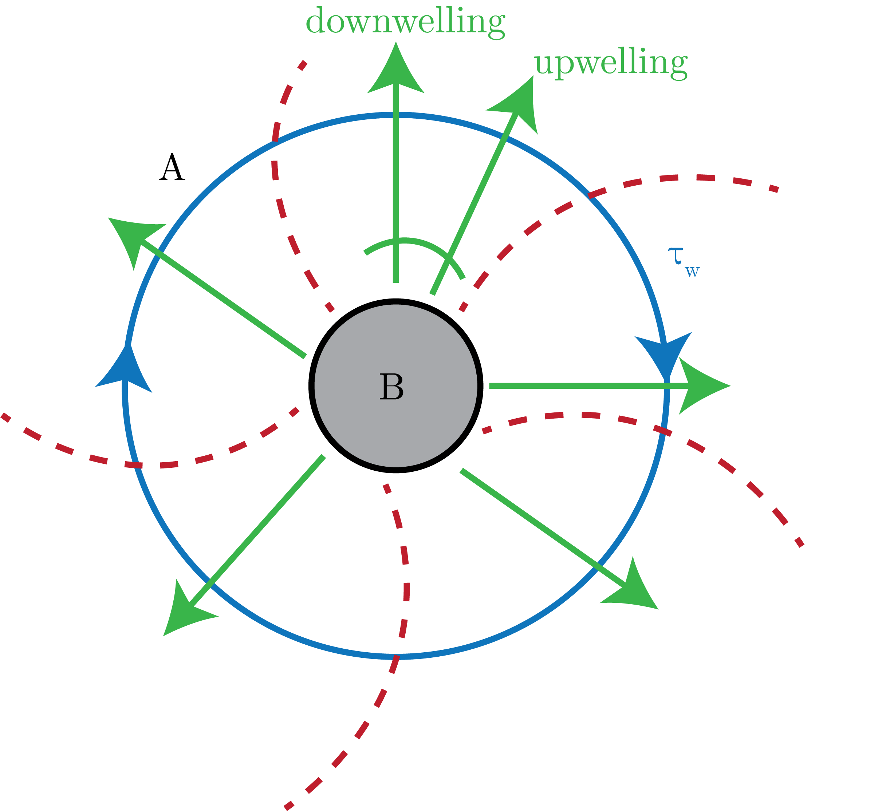

We start with the mean streamline, presented in Fig. 1 obeying:
\begin{equation}
\underline{v} = \left( v, w \right) = (-\partial_y\psi, \partial_z\psi).
\end{equation}
Fig. 1: The setup for our streamfunction of the ACC.
A plane view of the ACC is presented in Fig. 2.

Fig. 2: A plane view of the circulation patterns of the ACC.
We then present the "residual overturning circulation" as:
\begin{equation}
\psi_R = \overline{\psi} + \psi^\ast,
\end{equation}
where we define $\psi^\ast$ as the "eddy-driven" circulation.
A profile view of the baroclinic instability driving the ACC is presneted in Fig. 3.
Fig. 3: Profile view of the circulation patterns of the ACC.
We note that the residual circulation snakes along the isopycnals, as well as the bouyancy flux, as presented in Fig. 4.
Fig. 4: Circulation in the slanted isopycnals of the ACC.
The Theory
We start by writing down the buoyancy equation:
\begin{equation}
\underline{v}\cdot \nabla b = \partial_z B,
\end{equation}
where the buoyancy flux is due to small-scale processes.
Then, we linearize about a mean state to get:
\begin{equation}
\overline{u}\partial_y\overline{b} + \overline{w}\partial_z\overline{b} + \nabla \cdot\left( \overline{v'b'} \right) = \partial_z\overline{B}
\end{equation}
We note that the gradient is taken with respect to the $(x, z)$ coordinate plane.
Next, we assume that $\overline{v'b'}$ is overwhelming directed parallel to $\overline{b}$ surfaces, i.e.:
\begin{equation}
\frac{\overline{w'b'}}{\overline{v'b'}} = S_b.
\end{equation}
This then means that we can re-write our gradient of the advected bouyancy as:
\begin{equation}
\nabla \cdot\left( \overline{v'b'} \right) \to v^\ast\partial_y\overline{b} + w^\ast\partial_z\overline{b},
\end{equation}
where we have that:
\begin{equation}
\left( v^\ast, w^\ast \right) = \left( -\partial_y\psi^\ast, \partial_z\psi^\ast \right).
\end{equation}
The algebra to get this is based on:
\begin{equation}
S = - \frac{\overline{b}_y}{\overline{b}_z},
\end{equation}
where we have noted that for $b(y, z) = b$:
\begin{equation}
0 = \partial_yb\delta y + \partial_zb\delta z,
\end{equation}
meaning that:
\begin{equation}
\frac{\delta z}{\delta y} = - \frac{\partial_y \overline{b}}{\partial_z \overline{b}}.
\end{equation}
Therefore, we get that:
\begin{equation}
\left( \overline{v} + v^\ast \right) \partial_y\overline{b} + \left( \overline{w} + w^\ast\right) \partial_z\overline{b} = 0.
\end{equation}
This then means that:
\begin{equation}
J\left( \psi_r, \overline{b} \right) = \partial_zB,
\end{equation}
where we have defined:
\begin{equation}
\psi^\ast = \frac{\overline{v'b'}}{\overline{b}_z}.
\end{equation}